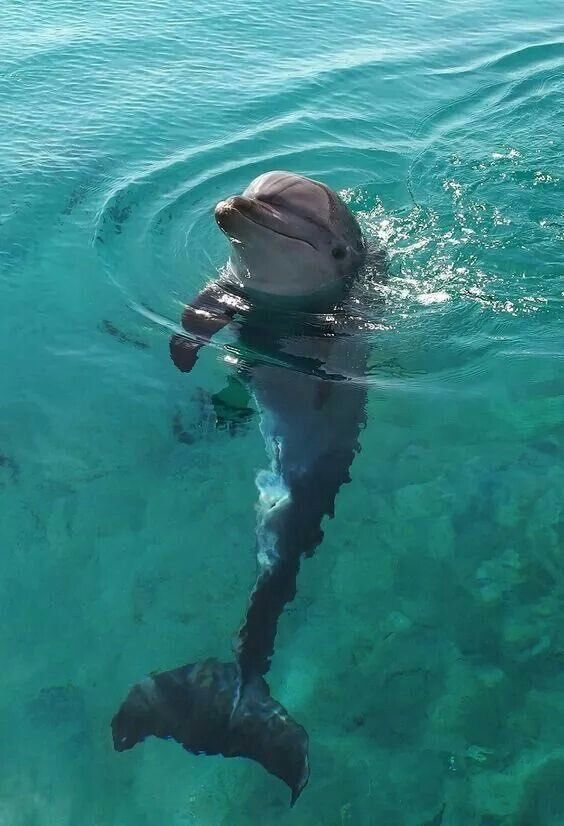
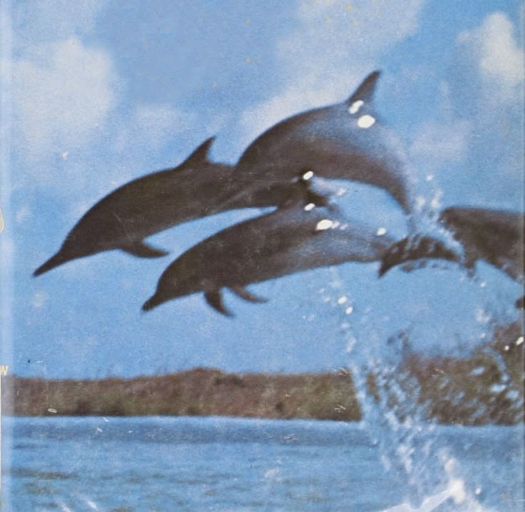

დელფინი
 დელფინები ძალიან ჭკვიანი და მეგობრული ზღვის ძუძუმწოვრები არიან. ისინი ბუდეებად ცხოვრობენ და იყენებენ ექოს საკვების მოსაძებნად და კომუნიკაციისთვის. დელფინები მთელ მსოფლიოში გვხვდებიან და ხშირად ხტებიან წყლიდან ან ეჯიბრებიან ტალღებს.
შეიტყვე ზღვის საოცარი ბინადრების შესახებ
დელფინები ძალიან ჭკვიანი და მეგობრული ზღვის ძუძუმწოვრები არიან. ისინი ბუდეებად ცხოვრობენ და იყენებენ ექოს საკვების მოსაძებნად და კომუნიკაციისთვის. დელფინები მთელ მსოფლიოში გვხვდებიან და ხშირად ხტებიან წყლიდან ან ეჯიბრებიან ტალღებს.
ზღვის კუები უძველესი არსებები არიან, რომლებიც მილიონობით წელია ცხოვრობენ ოკეანეებში. მათ აქვთ დიდი ფარფლები შორ მანძილზე საცურვად და ქვიშის სანაპიროებზე დებენ კვერცხებს. არსებობს რამდენიმე სახეობა, მათ შორის მწვანე კუ, ფიცარციანი და ტყავისებრი კუ.

რვაფეხა რვა საცეცის მქონე ჭკვიანი არსებაა, რომელსაც შეუძლია შეიცვალოს ფერი და ტექსტურა. ის ხშირად იყენებს მელანს მტრისგან თავის დასაღწევად და დასაცავად და შეუძლია კამუფლაჟით თითქმის უჩინარი გახდეს. მათ აქვთ საოცარი შესაძლებლობები პრობლემების გადასაჭრელად.